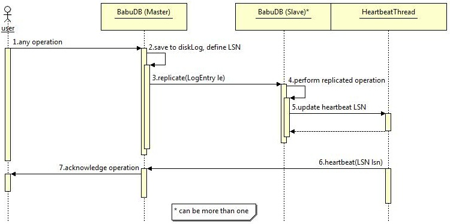
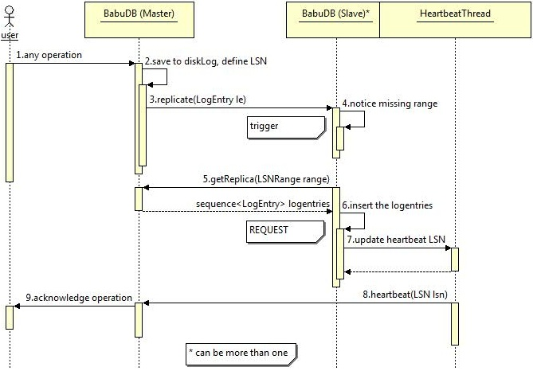
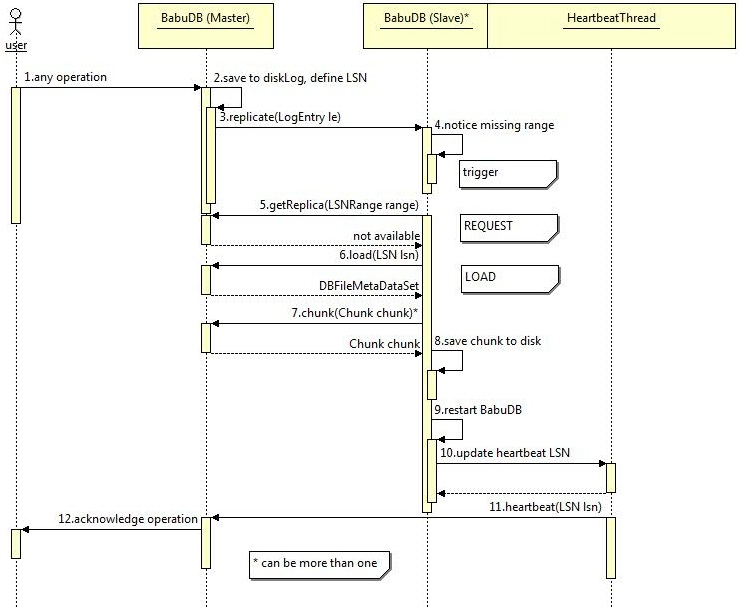
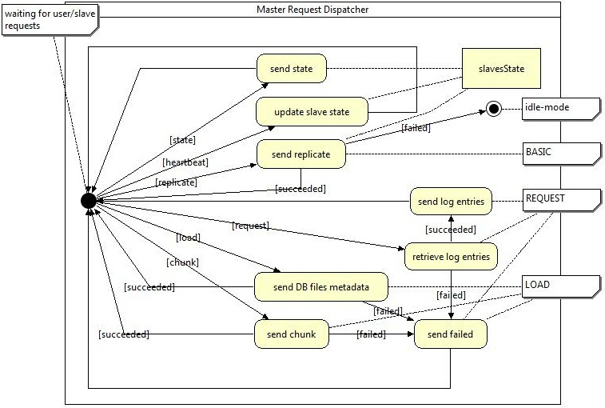
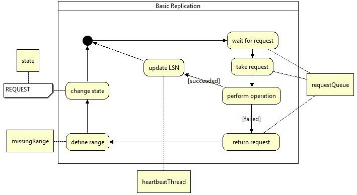
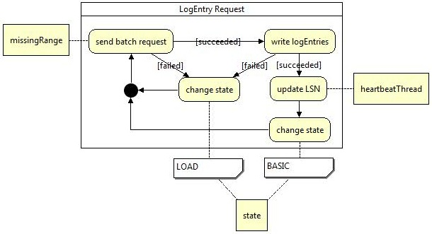
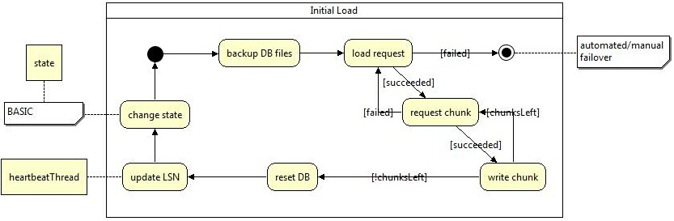

|
Description of BabuDB's replication for Java.
BabuDB's replication for JavaThis page describes how the BabuDB replication for Java works. If you want to know how to setup the replication just have a look at the UsageReplicationForJava and if you are more interestered in the explanations of the configuration parameters you might read the OptionsForJava. BehaviorThe following chapters will explain some sequence diagrams, which illustrate the behavior of the replication on different scenarios. Because of the master-slave architecture, slaves are passive participants, which have to be triggered by a master's request. Therefore all scenarios are beginning with a master's operation replicate request. Exceptional the heartbeat thread, which is a component of the slave's implementation, sends messages in periodic intervals to the master. This is necessary to support the accounting for the master, which will be explained in the chapter "Architecture". That's why slaves are represented by two instances named BabuDB(Slave) and HeartbeatThread. Normally a master serves more than one slave, but for simplification there will be only one slave diagrammed. Basic replicationHere the default scenario is shown, without any failure on the slave(s).  After a user's application represented by the user instance has executed an operation on the master [1], it saves a binary representation of the operation LogEntry to it's local disk-log-file to make it locally persistent [2]. Subsequently this LogEntry is send out to the slave(s) [3]. There it is executed as well [4] and after successfully finishing that the latest sequence number LSN, which is an indicator for progress on the slave, is updated on the HeartbeatThread [5]. This update causes an additional heartbeat, which is now send to the master to confirm the request to be replicated [6]. Depending on the replication mode, configured through the sync-N parameter, the master stalls the acknowledgement for the operation until at least N slaves have confirmed the replication request [7]. Request missing log entriesThe previously mentioned LSNs are also used to notice consistency violations with the master due their total ordering relation property. Therefore replication requests from the master are equipped with a LSN. The following diagram shows how a slave requests missing log entries at the master.  After the first steps [1,2,3], which are already explained in the "Basic replication" section, the slave recognizes some missing replication operations and builds a range from the last inserted operation to the actual requested one [4]. The inner state of this slave changes to REQUEST and it requests the missing log entries at the master b[5]. A list of log entries were received as response to that request and the slave executes them according to their natural ordering given by the LSN of each log entry [6]. Now the log entry which was triggering this scenario is executed and the LSN for the heartbeat thread is updated too [7]. Finally the master gets the heartbeat message from the slave [8] and acts analogical to the description of the first scenario in this chapter. Initial load on request failureIf a slave cannot synchronize with the master by requesting missing log entries at the master, it has to load the complete database from the master. This scenario is described here and should be the most infrequently occurring scenario as well, because of its high cost. Mostly this occurs if a slave joins a replication group that was in action before.  Until the slave requests the range from the master this scenario begins exactly the same way as described in section "Request missing log entries" [1,2,3,4,5]. The difference is that in this case the range request fails and so the slave has to send a load request to the master [6] to get synchronized with it. As result of that request the slave gets a set of file metadata which are the latest persistent database files of the master. These files are broken into smaller pieces called chunks to save bandwith. After saving all of these chunks to the local disk [8] the slave has to be restarted to load the new data from disk [9]. In the end the heartbeat LSN is updated to the latest LSN retrieved from the files on disk [10]. The step hereafter is again the same as described in section "Basic replication" of this chapter. ArchitectureBabuDB uses a master-slave related replication model. Databases are replicated by the granularity of single operations. Any operation performed by the user will cause a logentry to be written to the pending disk-log-file. These log entries are serialized and spread by the master via an ONCRPC architecture adapted from the XtreemFS project to the slaves. Master and slave have most components but their request dispatchers in common. These request dispatchers define the behavior of the master- and slave-role in this replication implementation. They have some state operations in common that can be accessed by any replication participant. There is an operation to stop the BabuDB (idle-mode) and put it into slave or master mode. Also a operation to get the latest progress-state defined through a LSN is available. This LSN identifies the latest log entry that is written to the disc log and is retrieved from the diskLogger. On startup a BabuDB replication participant remains in an idle-mode and is coined on the declaration of a master. The following state machines will describe how master and slave request dispatchers are working. MasterThe master was designed to produce a minimum overhead to save BabuDB's performance on insert and lookup operations. It simply has to spread operations performed by the users application to the slaves after checking if enough slaves are available to satisfy the sync-N criterion. Therefore any heartbeat messages are evaluated by the accountancy instance slavesState. To give the slaves the opportunity to synchronize with the master there are additional operations which now will be described from top to bottom.  Any activity is triggered by an incoming operation. Therefore the request dispatcher remains in its initial state until such a request is received. After finishing an operation the request dispatcher will return to its initial state and wait for further requests. The first of these operations is named state and can be triggered by a replication participant, or the users local application. It will cause the request dispatcher to get the identifier of the latest written log entry defined through a LSN from the diskLogger. The second operation is a pure remote operation called heartbeat. It is used by the slaves to send their progress informations to the master, that it can account these informations at the slavesState. The next operation can only be implicit executed by the users local application and is here denoted as replicate. Any database modifying user operation will execute a request dispatcher method called replicate() which hides behind the replication manager interface. This method will get all slaves available from the slavesState instance and check their quantity against the sync-N. If that check failes the request will be marked as failed and the replication switchs to the idle-mode, otherwise the serialized operation is send out to the slaves as described in chapter "Behavior". request is the next operation mentioned in here. It correlates with the missing log entries request also described in the "Behavior"-chapter. If the missing log entries defined by a LSNRange can be retrieved successfully, they are send back to the requesting slave, otherwise it will be informed about the failure. The last two operations are corresponding to the initial load section of the "Behavior"-chapter. The request dispatcher responds to a load a complete set of database files metadata to the requesting slave including the maximal chunk-size from the configuration. Even this operation can fail and send a failure message back to the slave. A request named chunk will be answered with a serialized byte-range according to the request's details. If the files on disk has been changed meanwhile, a failure-message is send back to the slave. To provide a minimal security even without using SSL authentication the master only allows requests from pre-configured participants or the local user application. SlaveThe slaves implementation works a way more autonomic.Beyond a request dispatcher, which only accepts state and replicate requests, are a replicationStage and the heartbeatThread. The heartbeatThread sends periodically messages to the master containing its progress in form of a LSN. The replicationStage encloses the logic to process replicate requests and keep the slave in a synchronous state with the master. Incoming replicate requests are previously buffered in a requestQueue ascending ordered by their LSNs. The logic is encapsulated in three different instances according to the three states the replicationStage can assume (BASIC,REQUEST and LOAD). These states correlate with the three scenarios introduced in the chapter "Behavior" and will be explained though state-machines in the following sections. To provide a minimal security even without using SSL authentication the slaves only allow requests from pre-configured participants or lookup operations by the local user application. Basic logicThis logic is used if the slave is in a synchronous state with the master and for this reason able to process requests normally. BASIC is the initial state for a newly instanciated slave.  In the logic's initial state the slave waits for new replicate request on the requestQueue. A new request is taken from the head of the queue if it becomes available. Now the logic tries to perform the operation retrieved from the request. If that succeeded the LSN of the heartbeatThread is updated with the one from the request and the logic returns to its initial state. Otherwise if the request failed it is queued up the requestQueue again. From the LSN of the request and the heartbeatThread a range of missing replicate requests is reconstructed and saved to a designated field named missingRange. After that the state of the replicationStage is changed to REQUEST and on returning to the initial state of this logic the replicationStage switches over to the request logic instance described next. Request logicThe request logic is used if the slave has recognized some missing replicate requests and recovers them from the master.  After it has been initialized the request logic builds a request from the missingRange and sends it to the master to get the missing requests. If that request was responded successfully by the master the operations are executed and their log entries are written to the disc.If even this succeeded the heartbeatThread is updated with the last LSN of the requested replicate requests. The replicationStage's state is switched back to BASIC and the logic returns to its initial state, where it can be replaced by another logic. If the requesting or the execution of the replicate request fails the replicationStage's state is immediately changed to LOAD and the logic returns to its initial state. The logic for the LOAD state is explained ahead. Load logicLOAD as expected loads a complete copy of the on disc database files from the master. This is necessary if a synchronous state can not be established by simply requesting missing log entries from the master.  At the beginning the old database files of the slaves on disc state are copied into a pre-configured backup directory. Then the a load request is send to the master asking for a set of database files metadata and a limit for the chunk-size. If that request failes the slave has to give up, switch over into the idle-mode and wait for a new master to be declared. Otherwise it builds a set of chunk-requests out of the informations to load the database from the master chunk by chunk. Every chunk will be processed in the same way, it will be requested and the binary answer will be written to the local disc until no chunks are left. If only one chunk-request fails the complete progress from the load request on has to be repeated. After all chunks are successfully written the BabuDB itself has to be restarted to load the new on-disc state. The LSN of this state is used to update the heartbeatThread and finally the state of the replicationStage is also changed back to BASIC. The logic returns to its initial state and the loading process is finished. How the invariants are assuredThis chapter explains, how the architecture assures that the invariants needed for a consistent replication of BabuDB are held. Invariants
Explanations
|
|
|